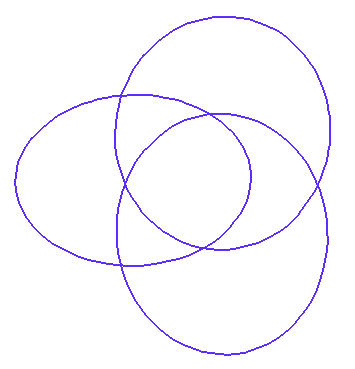
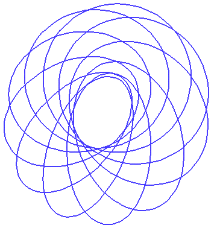
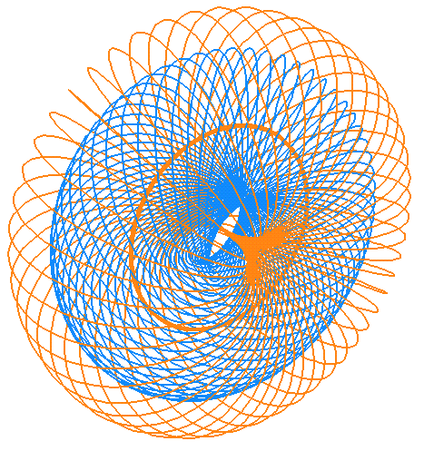
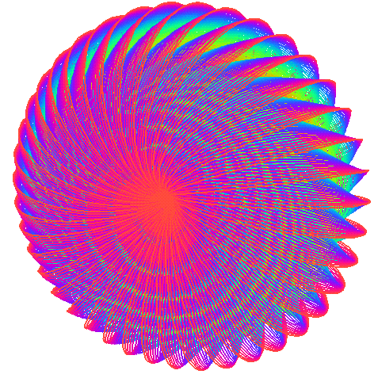

![[HOME]](khoops_files/home.gif) The Geometry Center Home Page
The Geometry Center Home Page
A geometric circle in R^3 is the set of points in a fixed plane that lie a fixed positive distance from a center point that lies in the same plane. (Notice that "circle" refers to the curve, and not to the disk it bounds.) In my posting and followup "Circle Puzzle," (geometry.college, geometry.puzzles, November 28, 1994), I explained a way to fill all of R^3 with disjoint geometric circles. It is discontinuous; i.e. the map from each point on by a particular circle to the triple (center, normal, radius) is not a continuous map. It is not hard to show, using algebraic topology, that it is impossible to fill all of R^3 continuously with disjoint geometric circles.
Geometric circles of unit radius are called hoops. Using the Axiom of Choice, J.H. Conway and H.T. Croft showed that it is nevertheless possible to discontinuously fill three-space using disjoint hoops. However, Daniel Asimov has shown that using continuous families of disjoint hoops, it is not possible to fill a region of infinite volume.
This article describes research results of Daniel Asimov, of NASA Ames Research Center in Mountain View, California. It gives an example of an open region in three-space continuously filled with hoops. It then explains the higher dimensional generalizations of continuous families of hoops.
It is possible to use hoops to continuously fill an open solid torus of revolution in R^3 with the two generating circles both of radius one; Dan Asimov refers to this region as a "bialy", after the bread like a bagel with the hole in the middle having "radius zero." The configuration of hoops on each torus is called the "circles of Villarceau," after the French mathematician who first discovered them in 1848.
In order to set up the generalization to higher dimensions, this description of the circles of Villarceau uses the stereographic projection of the Hopf fibration of the three-sphere. In a previous article, I described this same configuration of hoops in a less technical manner. See "Hoops in three-space," geometry.college, geometry.research, June 9, 1993, For more details, see Asimov's paper "Hoops in R^3," a NASA tech report.
The Hopf fibration of the three-sphere is the division of the three-sphere into certain great circles, called Hopf circles, in such a way that each point is on exactly one Hopf circle. Precisely, consider the three-sphere embedded in four-space; use pairs of complex numbers to specify points in four-space. The Hopf circles are the intersections of the complex one-dimensional linear subspaces with the three-sphere. A complex one-dimensional linear subspace is the same idea as a real one-dimensional linear subspace, except that all the numbers are complex. Namely, for fixed complex z and w, a linear subspace containing (z,w) is {(b*z,b*w): b varies over all complex numbers}. For more about the Hopf fibration, see the description in "Energies of Hopf Links," geometry.college, June 17, 1994. For pictures of Hopf fibrations, also see Tom Banchoff's movies of the Hopf fibration for just one torus, as well as Topology and Mechanics with Computer Graphics: Linear Hamiltonian Systems in Four Dimensions T. Banchoff, H. Koçak, F. Bisshopp and D. Laidlaw,Advances in Applied Mathematics (1986), 282-308.
A stereographic projection from the three-sphere to R^3 is analogous to stereographic projection from the two-sphere to the plane. Stereographic projection preserves circles and lines. Thus projections of the Hopf circles are circles, except the circle throught the projection point, which projects to a line and a point at infinity. Since we know that the Hopf circles fill up the three-sphere, we know that stereographic projection of the Hopf fibration fills three-space. Precisely, it gives a foliation of R^3 minus the z-axis by nested tori. Each individual torus consists of geometric circles of a single radius; each of the geometric circles wrap around the torus once in each generating direction.
In order to get hoops rather than geometric circles of different radii, we apply a uniform shrinking to each individual torus. In order to preserve continuity, nearby tori from the Hopf fibration are shrunk by close shrinking constants. By choosing the shrinking constants wisely, after shrinking each torus, we get another series of nested tori filled now by hoops. The new nested tori all have one of the two generators equal to the unit circle in the xy-plane with the origin as center. The second generating circles of the new nested tori have distinct radii, including every non-negative number less than one. Thus the disjoint hoops comprising the new tori are a continuous way to fill the open bialy.

Figure 1 shows three hoops in a torus around halfway through the solid bialy.

Figure 2 shows more hoops comprising the one torus.

Figure 3 shows three different tori filled with in the solid bialy.

Figure 4 shows many circles in the filled bialy.
What happens in higher dimensions? Define a k-hoop in N-space to be the set of points in a (k+1)-dimensional plane (not necessarily containing the origin) that lie a unit distance from a point that lies in the same (k+1)-dimensional plane. A k-hoop might also be described as a "unit geometric k-sphere."
Now we let N = 2k+1. Is it possible to continuously fill up a region of (2k+1)-space with disjoint k-hoops? The answer is yes for k = 0, 1, 3, and 7; the filling can be done using the (2k+1)-dimensional analogue of the stereographic projection of the Hopf fibration, followed by uniform shrinking on each S^k x S^k "torus" (similar to the three-dimensional case). That there are such Hopf fibrations is related to the fact that division algebras over the real numbers are possible only in dimensions 1, 2, 4, and 8, as exemplified by the reals (R), complexes (C), quaternions (H), and octonions (O).
Surprisingly, Asimov has shown that the dimensions k = 0, 1, 3, and 7, for which one can construct (2k+1)-bialys, are the only dimensions for which an open set in R^(2k+1) can be continuously filled by k-hoops.
Here is a table of volumes of the (2k+1)-bialys described above. Just as in the three-dimensional case, there is a finite bound on the volume of the region filled continuously in higher dimensions. However, it is not known whether these are the largest volumes in these dimensions which can be continuously filled by k-hoops, with the exception of the case k = 0, where 4 is clearly the maximum.
Dimension k of the hoops Volume of the (2k+1)-bialy
0 4
1 2*pi^2
3 pi^4
7 (pi^8)/72
Using a cartesian product with any R^n, these examples of k-hoops foliating an open set in R^(2k+1) immediately lead to examples where an open set in R^(2k+1+n) is foliated by k-hoops for any n >= 0. Other cases are not yet known. For example, it is unknown whether an open set in R^6 can be foliated by 2-hoops (geometric 2-spheres of unit radius in R^6).
This article is based on a Geometry Center talk by Daniel Asimov on November 15, 1994. Thanks to him also for helping with the figures.
The Geometry Center Home Page
Comments to:
webmaster@www.geom.uiuc.edu
Created: May 19 1995 ---
Last modified: Jun 18 1996